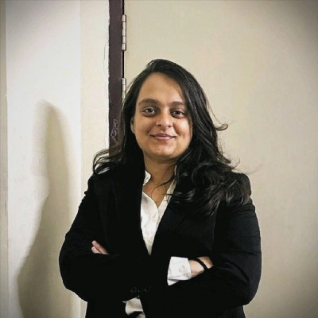

Indian Institute of Technology Kanpur
Bachelor of Technology in Electrical Engineering
2025
I’m an Electrical Engineering graduate from the Indian Institute of Technology Kanpur, currently working in Data Transformation and Analytics at Accenture and preparing for the next chapter of my academic journey.

Add your profile photo
Save it as assets/profile.jpg
My interests lie at the intersection of data, machine learning and practical problem-solving. Through industry experience, open-source work and academic projects, I have explored NLP, computer vision, multimodal systems and scalable data pipelines. I am currently applying for master's programs.
Probabilistic Machine Learning · Parallel Computing · Intelligent Pattern Recognition · Computer Vision and Deep Learning · Agentic AI · Agentic Knowledge Graph Construction · LangChain Chat with Your Data · LangChain for LLM Applications · AWS Cloud Technical Essentials · Probability and Statistics · Linear Algebra and Differential Equations · Fundamentals of Computing
Selected among the top 2% of 15,000+ teams nationwide as a finalist.
Selected as one of 1,220 contributors from more than 43,000 applicants.
Secured All India Rank 6974 among 150,000 shortlisted candidates.
A selection of research and academic projects across computer vision, machine learning and image processing.
Explored a video-based scoliosis screening system to compute the Asymmetry Index (AIX). Used SAM2 for back-region segmentation, VGG-T for dense 3D point-cloud generation and HSurfNet for surface-normal estimation to support curvature and asymmetry analysis.
Worked on cloud segmentation and motion prediction using CloudSegNet, contour detection, HRNet and self-supervised decoupled motion models. Used a StyleGAN-based approach to generate realistic cloud-motion animations from static landscape images.
Implemented RHO-LOSS to prioritize informative training examples and adapted ResNet-18 into a Bayesian neural network for uncertainty estimation. Reported 18× faster training with a 2–4% accuracy gain on CIFAR-10, and a 66% reduction in predictive Negative Log-Likelihood.
Built an autoencoder-based feedback recommender, reconstructed U²-Net using binarized neural-network principles for salient object detection (30% lower training time on DUTS), and worked on image-processing tools including bilateral filtering, lava-mask generation and Hough-transform text alignment.
Developed a recurrent-neural-network chatbot for question answering over stories using the BaBi dataset, alongside sentiment analysis and Naive Bayes / Support Vector Machine text classification.
As part of Google Summer of Code with Red Hen Lab, contributed to an end-to-end Farsi corpus pipeline with speech recognition, punctuation restoration and corpus integration in CQPweb.
I'm happy to connect about graduate study, research, machine learning, data and collaboration opportunities.